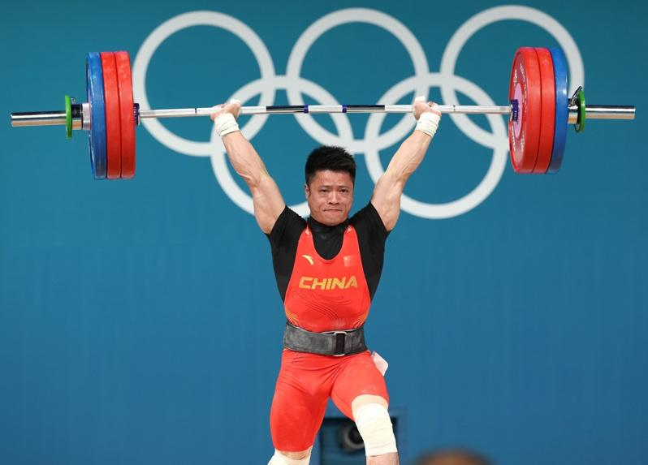

三年前的东京，李发彬在挺举挺起166公斤时，在奥运赛场祭出了自己的经典动作「金鸡独立」，被惊为天人，他拿到了自己的首枚奥运金牌。
如今在巴黎，31岁的李发彬再次站在奥运会男子举重61公斤级决赛赛场上，尽管最后的挺举挑战新重量失败，未能再有「惊世之举」，但这位经历了伤病、状态起伏的老将，仍以绝对优势卫冕，成就了属于自己的、更令人钦佩的「不动如山」。
兼具天赋、恒心与好胜之心的李发彬在举重之路上可谓一路高歌猛进，2012年，19岁的他进入国家队后，更是如鱼得水，不断取得突破。他先后在世界青年举重锦标赛、全国男子举重冠军赛、世界举重锦标赛等国内外大赛中斩金夺银，逐渐成长为该项目的领军人物。特别是在2020年东京奥运会上，李发彬以打破奥运会纪录的成绩夺得男子61公斤级冠军，一战成名。
然而，在这个奥运周期，李发彬面临种种挑战：因为级别调整，他要与原67公斤级的奥运冠军谌利军争夺奥运会参赛资格；伤病困扰也曾令这位老将陷入低谷；随着年龄增加，这位曾经以绝对实力傲视群雄的昔日冠军，更受到了年轻选手的挑战。 就在李发彬2023年几乎一整年未有佳绩的同时，年轻的对手正在迅速成长，特别是20岁的美国选手汉普顿·莫里斯，在今年泰国普吉岛举行的举重世界杯上以176公斤打破了李发彬保持的挺举世界纪录。 面对外界和自身状态的变化，李发彬以对举重和竞技场的热爱成就了属于自己的「不动如山」，凭借毅力和勇气，他再一次站在了奥运会的赛场。
7日，巴黎奥运会举重男子61公斤级决赛的现场气氛紧张而热烈。作为该项目的上届冠军，李发彬自信出场，抓举环节，他首把便成功举起137公斤，第三把成功举起143公斤，创造了新的抓举奥运会纪录，领先第二名多达8公斤，再度展现出惊人的实力。 然而，较长候场后的挺举环节，李发彬仅仅成功1次，举起了167公斤，尽管金牌已毫无悬念，但这位老将仍在最后一次尝试172公斤失败后发出了不甘的大吼。
赛后，李发彬直言「今天的表现不太完美」。他表示，自己此次抓举整场表现符合预期，「但是挺举不太好，应该是体能的问题，降完体重和年龄的关系」，这位老将颇有些无奈地表示，「后面确实很难，不像年轻时候，拼的时候使得出劲来」。
回望自己的两次奥运经历，李发彬称，第一次参加奥运会我迫不及待地想表现自己；第二次参加奥运会，我把它作为自己最后一届奥运会来比，更享受这个过程。
尽管也有「不像年轻时候」的无奈，但李发彬还是特别提到此番与自己同台竞技的、已经第五次参加奥运会的印尼老将伊拉万，「我特别佩服他，35岁了还在奥运会赛场上拼搏，这就是奥运精神，（我）需要向他学习这种精神，也许我能做到继续坚持下去」。
「奥运会是我运动生涯体会到的最燃现场，因为这个现场，也让我不舍得退役。」今晚，已经成为两届奥运会冠军的李发彬说。他的「不动如山」仍在。
巴黎奥运热话题
- 刘易士都无言 美国队没人晋级跳远决赛
- 球拍被记者踩断 王楚钦：我是受害者、不想再讨论
- 穿太辣制造不恰当气氛 巴拉圭泳手被逐出选手村
- 陈梦对孙颖莎引发球迷大战 北京要整治体育界饭圈文化
- 美运动员「紫脸」是屏幕偏色？ 中体育官员「恨国言论」被查